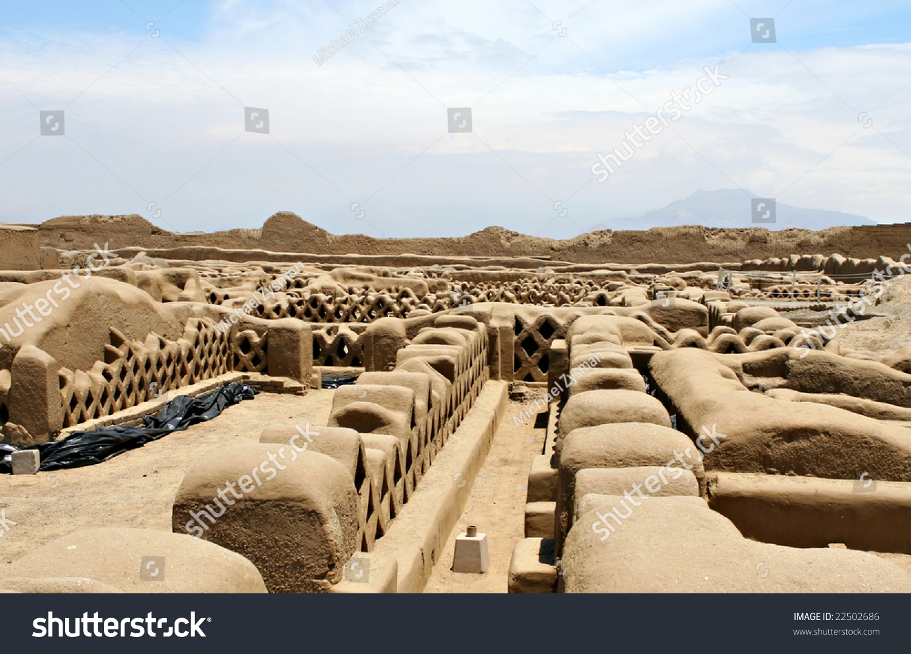
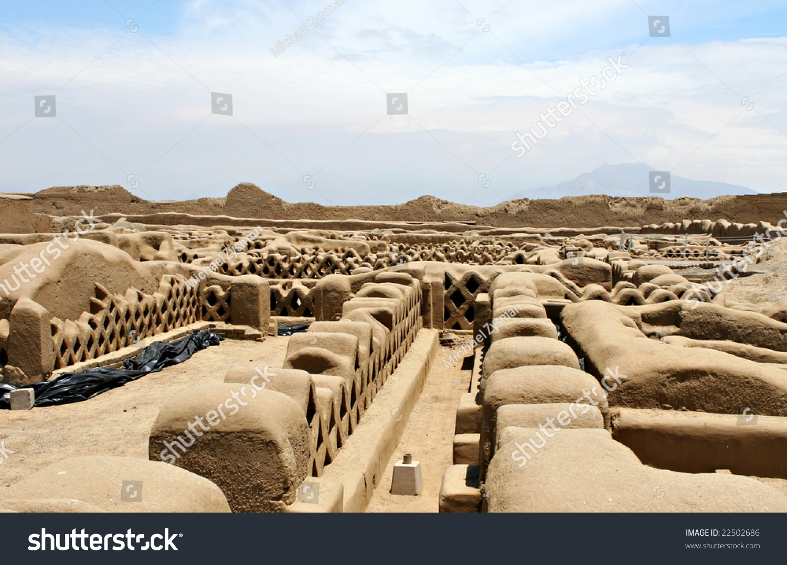

Chan Chan
Chan Chan es la ciudad de adobe más grande de América y la capital del Imperio Chimú, que floreció entre los siglos IX y XV antes de la llegada de los Incas. Está ubicada en la costa norte del Perú, cerca de la ciudad de Trujillo, en la región La Libertad.
Este impresionante sitio arqueológico se compone de una gran cantidad de estructuras hechas de adobe, incluyendo palacios, templos, plazas y murallas. Chan Chan fue una ciudad planificada y organizada en diferentes barrios, cada uno con su propia función y carácter.
 
